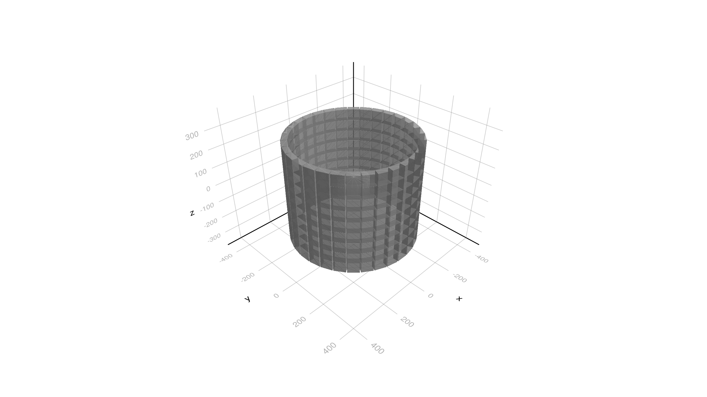

Basic/B3a Example
This example simulates schematically a Positron Emitted Tomography system. It is equivalent to the B3a example in Geant4 but re-written with a new more Julia friendly interface. See README file for the example.
You can also download this example as a Jupyter notebook and a plain Julia source file.
Table of contents
- Loading the necessary Julia modules
- Define Detector Parameters struct
- Defile Physics List
- Define Primary Particle Generator
- Define Simulation Data
- Define Sensitive Detectors
- User Actions
- Create the Application
- Configure, Initialize
- Run the simulation
- Visualize the detector geometry
Loading the necessary Julia modules
Load the Geant4 and Geant4.SystemOfUnits modules.
using Geant4
using Geant4.SystemOfUnits: cm, cm3, mm, pGy, eplus, keV, g, eVDefine Detector Parameters struct
The B3Detector structure is defined with the default detector parameters. We include the B3Detector.jl file not to clutter the example.
include(joinpath(@__DIR__, "B3Detector.jl"))Defile Physics List
The B3aPhysics structure is defined with the default physics list for the B3a example. It is composed of the default physics, the electromagnetic physics and the radioactive decay physics. The RegisterPhysics function is used to register the physics processes in the physics list. The move! function is used to move the ownership of the physics list to the G4VUserPhysicsList type. It returns a pointer to the physics list.
struct B3aPhysics <: G4VUserPhysicsList
function B3aPhysics(verbose)
pl = G4VModularPhysicsList()
RegisterPhysics(pl, move!(G4DecayPhysics(verbose))) ## Default physics
RegisterPhysics(pl, move!(G4EmStandardPhysics(verbose))) ## EM physics
RegisterPhysics(pl, move!(G4RadioactiveDecayPhysics(verbose))) ## Radioactive decay
return pl
end
endDefine Primary Particle Generator
This is the primary particle generator for the B3a example. It generates a ion beam of 0 energy from a random position inside a cube shaped volume. The user parameter type B3aGeneratorData is defined with the default generator parameters. The functions _gen and _init are defined to generate the primary particles and to initialize the generator, respectively. Finally, the B3aGenerator function is defined to instantiate an instance of the G4JLPrimaryGenerator type.
@with_kw mutable struct B3aGeneratorData <: G4JLGeneratorData
gun::Union{Nothing, CxxPtr{G4ParticleGun}} = nothing
ion::Union{Nothing, CxxPtr{G4ParticleDefinition}} = nothing
Z::Int64 = 9
A::Int64 = 18
ionCharge::Float64 = 0eplus
excitEnergy::Float64 = 0keV
position::G4ThreeVector = G4ThreeVector(4cm,4cm,4cm)
direction::G4ThreeVector = G4ThreeVector(1,0,0)
end
function B3aGenerator(;kwargs...)
data = B3aGeneratorData(;kwargs...)
function _init(data::B3aGeneratorData, ::Any)
gun = data.gun = move!(G4ParticleGun())
SetParticleMomentumDirection(gun, G4ThreeVector(1,0,0))
SetParticleEnergy(gun, 1eV)
end
function _gen(evt::G4Event, data::B3aGeneratorData)::Nothing
if isnothing(data.ion) # late initialize (after physics processes)
ion = data.ion = GetIon(data.Z, data.A, data.excitEnergy)
SetParticleDefinition(data.gun, ion)
SetParticleCharge(data.gun, data.ionCharge)
end
position = data.position + G4ThreeVector((rand()-0.5)*1cm, (rand()-0.5)*1cm, (rand()-0.5)*1cm)
SetParticlePosition(data.gun, position)
GeneratePrimaryVertex(data.gun, CxxPtr(evt))
end
G4JLPrimaryGenerator("B3aGenerator", data; init_method=_init, generate_method=_gen)
end;Define Simulation Data
The SimDataB3a structure is defined to collect the simulation data during the execution of a run. The add! function is defined to add (i.e. reduce) the data from one instance to another when running in multi-threading mode. In this case we have only two counters for the number of good events and the sum of the dose of the patient.
mutable struct SimDataB3a <: G4JLSimulationData
##---Run data
goodEvents::Int64
sumDose::Float64
SimDataB3a() = new(0,0)
end
function add!(x::SimDataB3a, y::SimDataB3a)
x.goodEvents += y.goodEvents
x.sumDose += y.sumDose
endadd! (generic function with 1 method)Define Sensitive Detectors
The B3a example has two sensitive detectors. One is for the crystal and the other for the patient. Each one has an associated data structure. The CrystalData structure is defined to collect the energy deposited in each crystal. The PatientData structure is defined to collect the dose in the patient.
# Crystal sensitive detector
struct CrystalData <: G4JLSDData
edep::Dict{Int64,Float64} # (CopyNo, Edep)
CrystalData() = new(Dict{Int64,Float64}())
end
function c_initialize(::G4HCofThisEvent, data::CrystalData)::Nothing
empty!(data.edep)
return
end
function c_processHits(step::G4Step, ::G4TouchableHistory, data::CrystalData)::Bool
edep = step |> GetTotalEnergyDeposit
edep < 0. && return false
copy = step |> GetPreStepPoint |> GetTouchable |> GetCopyNumber
data.edep[copy] = haskey(data.edep, copy) ? data.edep[copy] + edep : edep
return true
end
# Create SD instance
crystalSD = G4JLSensitiveDetector("CrystalSD", CrystalData(); ## SD name an associated data are mandatory
processhits_method=c_processHits, ## process hist method (also mandatory)
initialize_method=c_initialize); ## initialize method
# Patient Sensitive detector
mutable struct PatientData <: G4JLSDData
dose::Float64
PatientData() = new(0)
end
function p_initialize(::G4HCofThisEvent, data::PatientData)::Nothing
data.dose = 0
return
end
function p_processHits(step::G4Step, ::G4TouchableHistory, data::PatientData)::Bool
edep = step |> GetTotalEnergyDeposit
edep <= 0. && return false
volume = step |> GetPreStepPoint |> GetTouchable |> GetSolid |> GetCubicVolume
density = step |> GetPreStepPoint |> GetMaterial |> GetDensity
data.dose += edep /(density * volume)
return true
end
# Create SD instance
patientSD = G4JLSensitiveDetector("PatientSD", PatientData(); ## SD name an associated data are mandatory
processhits_method=p_processHits, ## process hist method (also mandatory)
initialize_method=p_initialize); ## initialize methodUser Actions
We define the user actions for the B3a example. The beginrun function is defined to initialize the simulation data. The endrun function is defined to print the results of the simulation. The endevent function is defined to count the number of good events and to accumulate the dose in the patient. The stacking action is defined to kill the neutrinos and to keep the primary particles.
function beginrun(run::G4Run, app::G4JLApplication)::Nothing
data = getSIMdata(app)
data.goodEvents = 0
data.sumDose = 0.
nothing
end
μGy = Geant4.SystemOfUnits.gray/1e6
function endrun(run::G4Run, app::G4JLApplication)::Nothing
partName = app.generator.data.gun |> GetParticleDefinition |> GetParticleName |> String
##---end run action is called for each workwer thread and the master one
if G4Threading!G4GetThreadId() < 0
data = app.simdata[1]
##---This is the master thread, so we need to add all the simuation results-----------------
for d in app.simdata[2:end]
add!(data, d)
end
noEvents = run |> GetNumberOfEvent
G4JL_println("""
--------------------End of Run------------------------------
The run was $noEvents $partName Nb of 'good' e+ annihilations: $(data.goodEvents)
Total dose in patient : $(data.sumDose/pGy) pGy
------------------------------------------------------------
""")
end
end
function endevent(evt::G4Event, app::G4JLApplication)
edep = getSDdata(app, "CrystalSD").edep
dose = getSDdata(app, "PatientSD").dose
data = getSIMdata(app)
if count(>(500keV), values(edep)) == 2
data.goodEvents += 1
end
data.sumDose += dose
return
end
let G4NeutrinoE, first=true
global function stacking(trk::G4Track, app::G4JLApplication)::G4ClassificationOfNewTrack
if first ## emulation of C++ static variable
G4NeutrinoE = FindParticle("nu_e")
first = false
end
(trk |> GetParentID) == 0 && return fUrgent ## keep primary particle
(trk |> GetDefinition) == G4NeutrinoE && return fKill ## kill neutrino
return fUrgent
end
end;Create the Application
app = G4JLApplication(; detector = B3Detector(), ## detector with parameters
simdata = SimDataB3a(), ## simulation data structure
generator = B3aGenerator(), ## primary particle generator
nthreads = 0, ## # of threads (0 = no MT)
physics_type = B3aPhysics, ## what physics list to instantiate
#evtdisplay = display, ## set event display
endeventaction_method = endevent, ## end-event action (fill histograms per event)
beginrunaction_method = beginrun, ## begin run action
endrunaction_method = endrun, ## end run action
stackaction_method = stacking, ## track classification action
sdetectors = ["CrystalLV+" => crystalSD,
"PatientLV" => patientSD] ## mapping of LVs to SDs (+ means multiple LVs with same name)
);
**************************************************************
Geant4 version Name: geant4-11-02-patch-01 [MT] (16-February-2024)
Copyright : Geant4 Collaboration
References : NIM A 506 (2003), 250-303
: IEEE-TNS 53 (2006), 270-278
: NIM A 835 (2016), 186-225
WWW : http://geant4.org/
**************************************************************
Configure, Initialize
configure(app)
initialize(app)cryst_mat = CxxWrap.CxxWrapCore.CxxPtr{Geant4.G4Material}(Ptr{Geant4.G4Material} @0x0000000004967d90)
Checking overlaps for volume crystal:0 (G4Box) ... OK!
Checking overlaps for volume crystal:1 (G4Box) ... OK!
Checking overlaps for volume crystal:2 (G4Box) ... OK!
Checking overlaps for volume crystal:3 (G4Box) ... OK!
Checking overlaps for volume crystal:4 (G4Box) ... OK!
Checking overlaps for volume crystal:5 (G4Box) ... OK!
Checking overlaps for volume crystal:6 (G4Box) ... OK!
Checking overlaps for volume crystal:7 (G4Box) ... OK!
Checking overlaps for volume crystal:8 (G4Box) ... OK!
Checking overlaps for volume crystal:9 (G4Box) ... OK!
Checking overlaps for volume crystal:10 (G4Box) ... OK!
Checking overlaps for volume crystal:11 (G4Box) ... OK!
Checking overlaps for volume crystal:12 (G4Box) ... OK!
Checking overlaps for volume crystal:13 (G4Box) ... OK!
Checking overlaps for volume crystal:14 (G4Box) ... OK!
Checking overlaps for volume crystal:15 (G4Box) ... OK!
Checking overlaps for volume crystal:16 (G4Box) ... OK!
Checking overlaps for volume crystal:17 (G4Box) ... OK!
Checking overlaps for volume crystal:18 (G4Box) ... OK!
Checking overlaps for volume crystal:19 (G4Box) ... OK!
Checking overlaps for volume crystal:20 (G4Box) ... OK!
Checking overlaps for volume crystal:21 (G4Box) ... OK!
Checking overlaps for volume crystal:22 (G4Box) ... OK!
Checking overlaps for volume crystal:23 (G4Box) ... OK!
Checking overlaps for volume crystal:24 (G4Box) ... OK!
Checking overlaps for volume crystal:25 (G4Box) ... OK!
Checking overlaps for volume crystal:26 (G4Box) ... OK!
Checking overlaps for volume crystal:27 (G4Box) ... OK!
Checking overlaps for volume crystal:28 (G4Box) ... OK!
Checking overlaps for volume crystal:29 (G4Box) ... OK!
Checking overlaps for volume crystal:30 (G4Box) ... OK!
Checking overlaps for volume crystal:31 (G4Box) ... OK!
Checking overlaps for volume ring:0 (G4Tubs) ... OK!
Checking overlaps for volume ring:1 (G4Tubs) ... OK!
Checking overlaps for volume ring:2 (G4Tubs) ... OK!
Checking overlaps for volume ring:3 (G4Tubs) ... OK!
Checking overlaps for volume ring:4 (G4Tubs) ... OK!
Checking overlaps for volume ring:5 (G4Tubs) ... OK!
Checking overlaps for volume ring:6 (G4Tubs) ... OK!
Checking overlaps for volume ring:7 (G4Tubs) ... OK!
Checking overlaps for volume ring:8 (G4Tubs) ... OK!
Checking overlaps for volume Detector:0 (G4Tubs) ... OK!
Checking overlaps for volume Patient:0 (G4Tubs) ... OK!
Run the simulation
Lets run for 10,000 events and see the results.
beamOn(app, 10000)
# ui`/tracking/verbose 0`======================================================================
====== Radioactive Decay Physics Parameters =======
======================================================================
min MeanLife (from G4NuclideTable) 1 ns
Max life time (from G4DeexPrecoParameters) 1000 ps
Internal e- conversion flag 1
Stored internal conversion coefficients 1
Enabled atomic relaxation mode 1
Enable correlated gamma emission 0
Max 2J for sampling of angular correlations 10
Atomic de-excitation enabled 1
Auger electron emission enabled 1
Check EM cuts disabled for atomic de-excitation 1
Use Bearden atomic level energies 0
Use ANSTO fluorescence model 0
Threshold for very long decay time at rest 1 y
======================================================================
====================================================================
HADRONIC PROCESSES SUMMARY (verbose level 1)
-------------------------------------------------------------------------
Hadronic Processes for GenericIon
Process: Radioactivation
--------------------End of Run------------------------------
The run was 10000 F18 Nb of 'good' e+ annihilations: 1288
Total dose in patient : 303.36229707151267 pGy
------------------------------------------------------------
Visualize the detector geometry
Load the needed modules for visualization
using CairoMakie, Rotations, LinearAlgebra, IGLWrap_jll ## to force loading G4Vis extension
import DisplayAs: PNGDisplay the detector geometry
world = GetVolume("World")
img = draw(world[])
PNG(img)
This page was generated using Literate.jl.